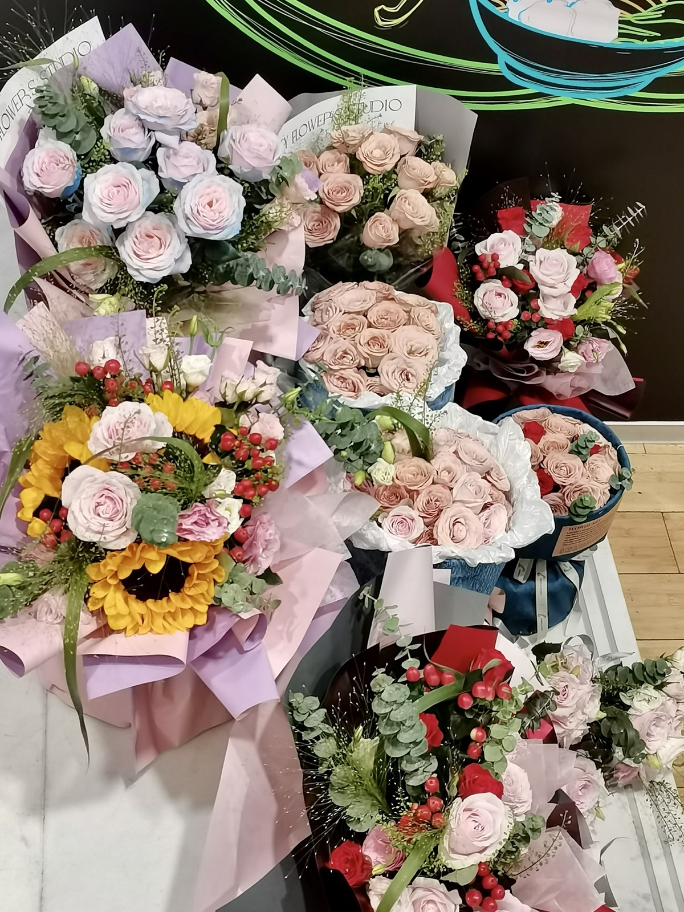
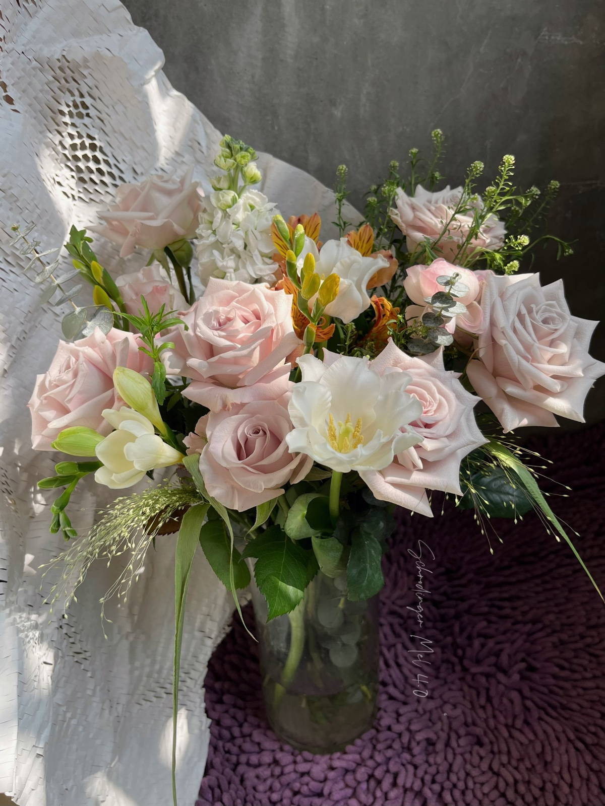
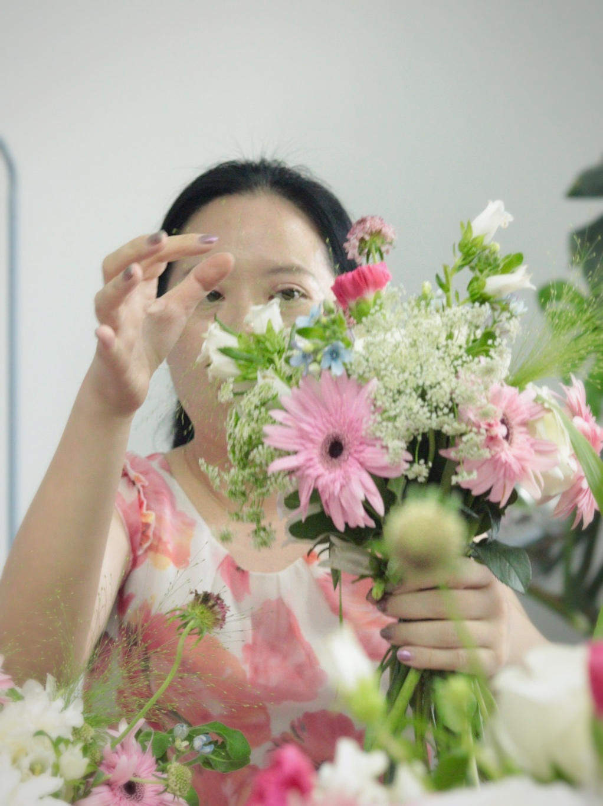

💐 花艺减压沙龙
以美育疗愈情绪，温柔读懂育儿与自我。当代女性身兼多重角色，长期高压紧绷、自我缺失、追求完美，容易将生活压力转嫁到亲子关系中。我以花艺美育为温柔载体，把抽象的情绪、育儿哲理、角色平衡，翻译成可感知、可体验、可落地的生活智慧，帮助参与者疗愈自我、松弛育儿。
心理学适配逻辑：依托艺术疗愈、情绪疏导、角色平衡、正念育儿心理。当代女性身兼多重角色，长期高压紧绷、自我缺失、追求完美，容易将生活压力转嫁到亲子关系中。我以花艺美育为温柔载体，把抽象的情绪、育儿哲理、角色平衡，翻译成可感知、可体验、可落地的生活智慧，帮助参与者疗愈自我、松弛育儿。
活动面向白领、女性、家长等全群体开放，以花艺创作、冥想放松、沉浸式美育为核心。我作为组织者，摒弃说教式疏导，以花为媒，让参与者在修剪、搭配、创作的过程中静心沉淀、梳理情绪、自我对话。在美育体验中读懂自我、接纳不完美、平衡多重角色，同时领悟温柔育儿、松弛相处的底层智慧。

本次是花艺减压沙龙的初步探索，落地海珠区社区场景，面向社区女性与家长群体开展美育疗愈活动。区别于传统娱乐活动，我全程以情绪疏导、自我松弛为核心，让长期奔波于家庭与工作中的女性慢下来、静下来，在花艺创作中与自我对话、释放压力，开启「艺术疗愈+自我成长」的全新公益模式。

本次活动聚焦都市白领群体，针对职场人高压、紧绷、情绪内耗的状态设计专属流程。我在活动开篇设置5分钟沉浸式冥想环节，帮助参与者快速脱离忙碌的工作状态、沉淀心绪。针对部分参与者难以静心、情绪浮躁、无法快速切换状态的问题，我一对一沟通疏导，帮助大家梳理压力来源、缓解内心焦虑。
我希望所有参与者读懂：花艺从来不是简单的手工创作，而是自我情绪的梳理与治愈。成年人稳定的情绪，是家庭最好的氛围、孩子最好的榜样。很多白领参与者反馈，这场沉浸式体验让自己学会了自我松弛、情绪和解，不再把职场压力、负面情绪带入家庭，让亲子相处、家庭氛围变得更加温暖和谐。

本次活动恰逢妇女节，我跳出表层的节日仪式感，聚焦女性自我身份认知与角色平衡的深层课题。当代女性常年被困在女儿、妻子、员工、母亲的多重角色中，习惯性优先照顾他人、忽略自我需求，陷入过度付出与自我内耗。
本次我特意选用低饱和度曼塔玫瑰为核心花材，花朵沉静温柔、生命力饱满，隐喻当代女性：看似温和内敛，实则在多重角色中坚韧生长、全面赋能，是家庭与生活中默默发力的"六边形战士"。
活动让所有女性参与者深受共鸣：没有人能成为完美的妈妈、完美的家人、完美的员工，不必强求面面俱到。成长的核心，是先做好自己、接纳不完美，再从容扮演好社会与家庭角色。这份认知，让很多参与者放下完美主义焦虑，松弛面对生活与育儿。

本次活动落地社区，面向家长与孩子开放亲子美育体验。我刻意弱化"制作完美花束"的结果导向，重点引导参与者在剪叶、拔刺、修瓣、整理花材的过程中，静心思考、自我对话、温柔陪伴。
我将花艺劳作的过程，温柔翻译成育儿的底层智慧：每一朵花都有独特的形态与生长节奏，没有完全相同的两朵花；每一个孩子也都有独特的性格、天赋与成长速度，不存在标准化的完美孩子。
很多家长在沉浸式体验中彻底释怀：育儿不是修剪、塑造、强求完美，而是耐心陪伴、温柔修正、接纳差异、静待成长。不必逼迫孩子成为别人眼中的优秀模样，陪伴孩子慢慢解决问题、慢慢长成自己的样子，就是最好的教育。参与者纷纷表示，这场安静的花艺体验，治愈了自己的育儿焦虑，也让自己学会温柔松弛地与孩子相处。
在花艺减压沙龙系列活动中，我是女性情绪与育儿智慧的翻译官：
• 把「无声的情绪压力」翻译成可疗愈的美育体验，实现自我和解
• 把「复杂的育儿道理」翻译成花艺生长的隐喻，学会接纳与陪伴
• 把「多重角色的束缚」翻译成自我优先的成长认知，活出松弛通透的自己